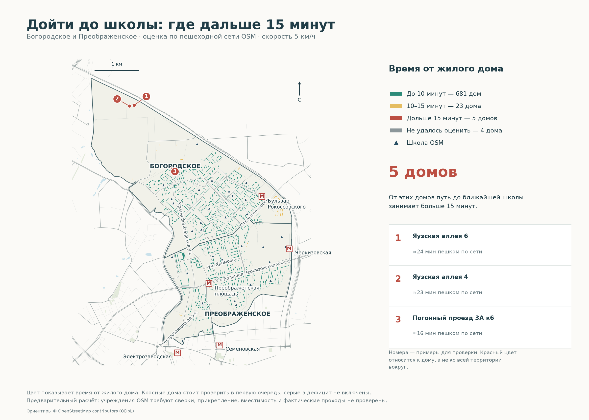
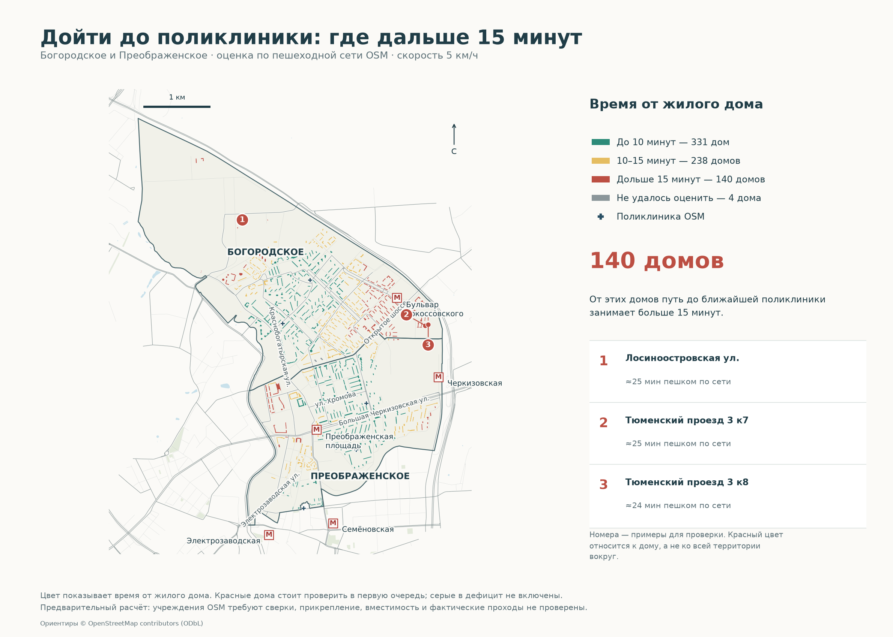
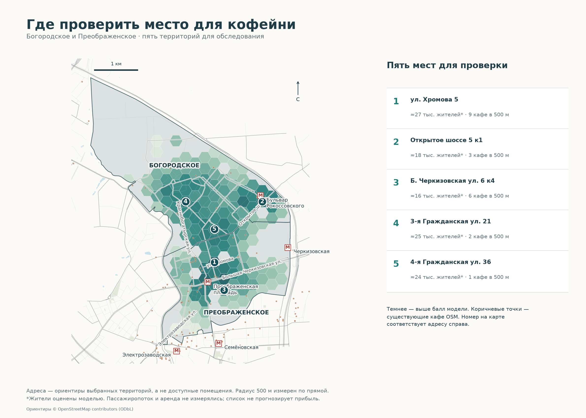
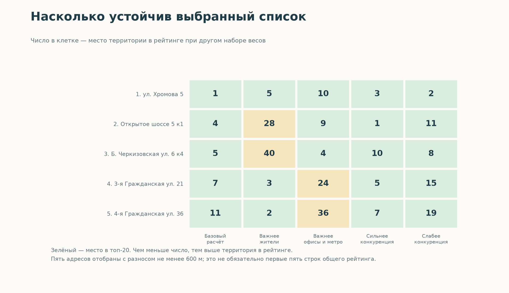
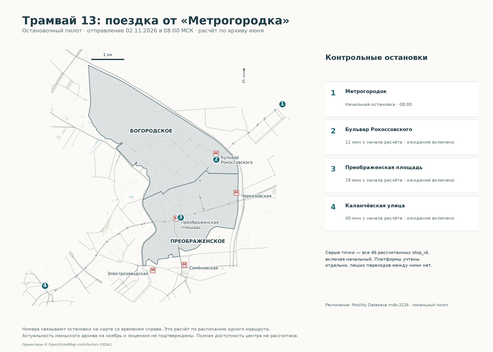
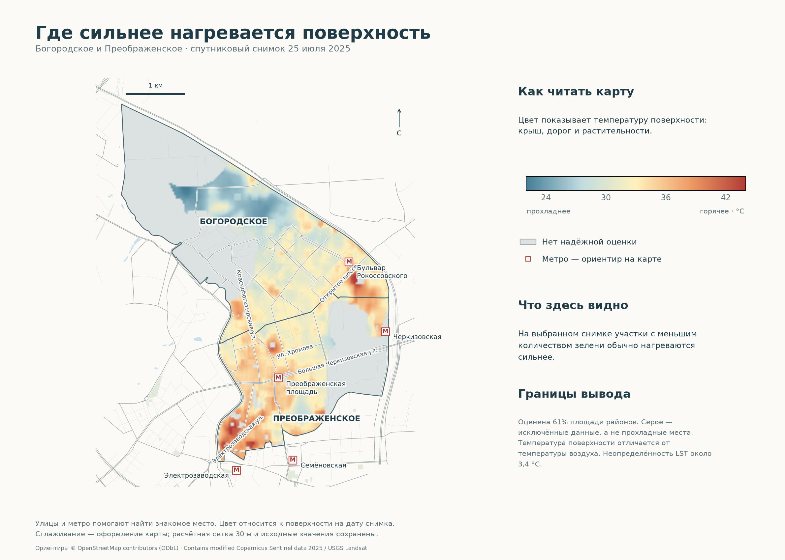
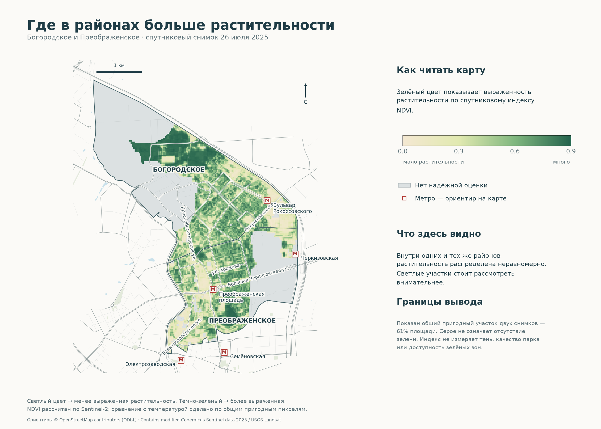
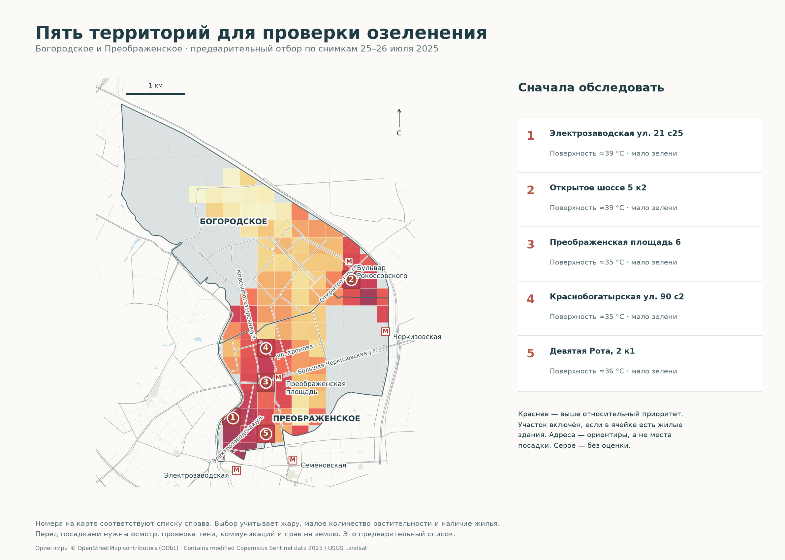
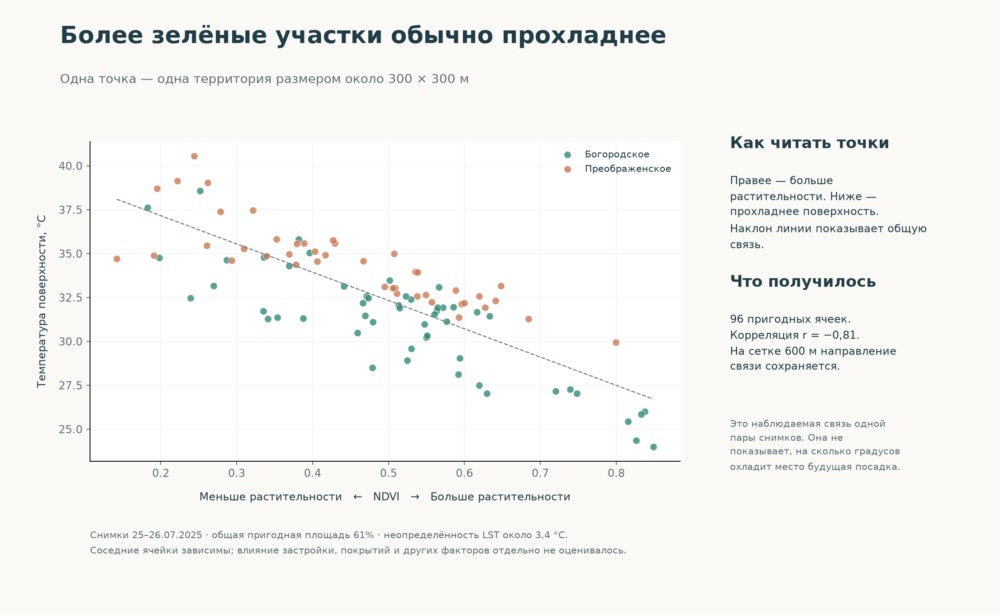

ГИС-ПОРТФОЛИО · ОБНОВЛЕНО 02.11.2026
Все карты — с улицами, метро и понятными пояснениями
4 проекта · 7 карт · 2 диаграммы. Это локальная обновлённая версия. Изображения лежат рядом с HTML: скачайте репозиторий целиком для просмотра без интернета. Нажмите на карту, чтобы открыть её крупно.
Предварительные результаты и ограничения сохранены. Для проекта транспорта готов остановочный пилот; карта доступности центра на всех режимах пока не рассчитана.
Карта · 01
Школы: где дольше 15 минут
Цвет дома — время до ближайшей школы по сети. Красные дома выделены для проверки.

Карта · 02
Поликлиники: где дольше 15 минут
Те же правила чтения: зелёный — ближе, красный — дольше 15 минут, серый — нет оценки.

Карта · 03
Где проверить место для кофейни
Пять номеров связаны с адресами справа. Спрос модельный; это список для обследования.

Диаграмма · 04
Устойчивость выбранных мест
Число в клетке — место в рейтинге при других весах. Меньше число — выше место.

Карта · 05
Трамвай 13: остановочный пилот
Четыре контрольные остановки и времена по архивному расписанию. Полный кейс до центра не выполнен.

Карта · 06
Где сильнее нагревается поверхность
Улицы и метро помогают ориентироваться. Серое — нет оценки; цвет показывает температуру поверхности.

Карта · 07
Где больше растительности
Светлее — менее выраженная растительность, темнее — более выраженная. Серое — исключённые данные.

Карта · 08
Где проверить возможность озеленения
Пять номеров, адреса-ориентиры и краткое основание отбора. Места посадок ещё не согласованы.

Диаграмма · 09
Зелень и температура: как связаны
Одна точка — ячейка 300 м. Правее — больше зелени, ниже — прохладнее. Связь не доказывает эффект посадок.
